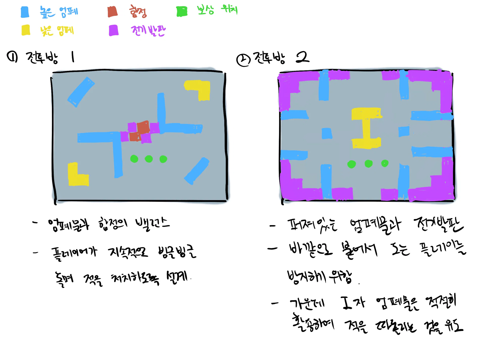
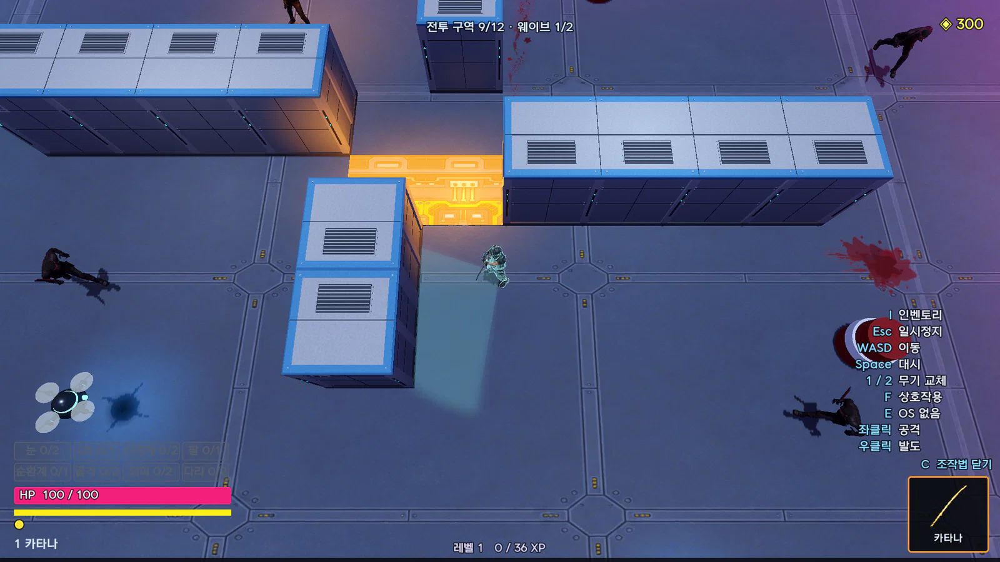

Edgerunners 기획서
개요 기획서
어떤 게임이고 핵심 재미가 무엇인지, 전체 구조를 한눈에 정리했다.

개요 기획서
EDGE
RUNNERS
사이버펑크 2077을 탑다운 로그라이트로 재구성한 게임.
다양한 빌드를 만들고 시험하며 적을 쓸어 나간다.
[지원자 이름]
1인 개발, Godot 4.7.2, 2026.08.21 – 10.21
01 게임 개요
사이버웨어와 무기로 빌드를 만드는 탑다운 로그라이트
장르
탑다운 액션 로그라이트
플랫폼
PC, 웹 브라우저
엔진
Godot 4.7.2
개발
1인, 2026.08.21 – 10.21 (62일)
시점
위에서 내려다보는 카메라 (피치 -72°)
한 판
튜토리얼(첫 판만), 시설, 방 12개, 휴식방, 보스
레퍼런스
Cyberpunk 2077과 Edgerunners(세계, 의체), Hades(방 선택, 영구 강화)

EDGERUNNERS 개요 기획서
02
02 핵심 재미
빌드를 만들고, 시험하고, 쓸어 나간다

빌드를 만든다
사이버웨어 8부위 32종과 프로토타입 9종, 무기 8자루.
같은 사이버웨어를 다시 얻으면 레벨이 오른다(최대 Lv3).

빌드를 시험한다
문에 적힌 보상을 보고 다음 방을 고른다.
방마다 적 조합과 장치가 달라서 같은 빌드라도 매번 다른 상황을 만난다.

적을 쓸어 나간다
웨이브마다 7~9명이 몰려온다.
모든 공격에 예고가 있어 보고 피할 수 있다. 빌드가 잘 맞으면 여러 적을 한꺼번에 처치한다.
EDGERUNNERS 개요 기획서
03
05 빌드 예시
빌드에 따라 플레이 방식이 달라진다

산데비스탄 근접
시간을 느리게 만들고 근접해서 벤다.
OS 산데비스탄
신경계 케렌지코프
다리 반사 신경 각부
무기 카타나

넷러너
느려진 시간 속에서 적과 장치를 해킹한다.
OS 사이버덱
눈 표적 연결 광학
신경계 OS 보조
외피 눈에는 눈

고릴라 암즈
적을 잡아 던져 벽이나 다른 적에 부딪히게 하고, 내려찍는다.
팔 고릴라 암즈
골격 충격 골격
골격 티타늄 골격
무기 해머
EDGERUNNERS 개요 기획서
06
09 레벨 제작
손그림에서 격자 도면, 실제 플레이까지

손그림

격자 도면 (맵 편집기)

실제 플레이
격자 한 칸은 2m이고 대시는 3.5m다.
도면만 보고도 대시로 넘을 수 있는 곳을 알 수 있다.
직접 그린 맵 8개(전투 3, 엘리트 2, ??? 2, 보스 1)는 태그나 이름으로 지정해 판에 배치한다.
EDGERUNNERS 개요 기획서
10